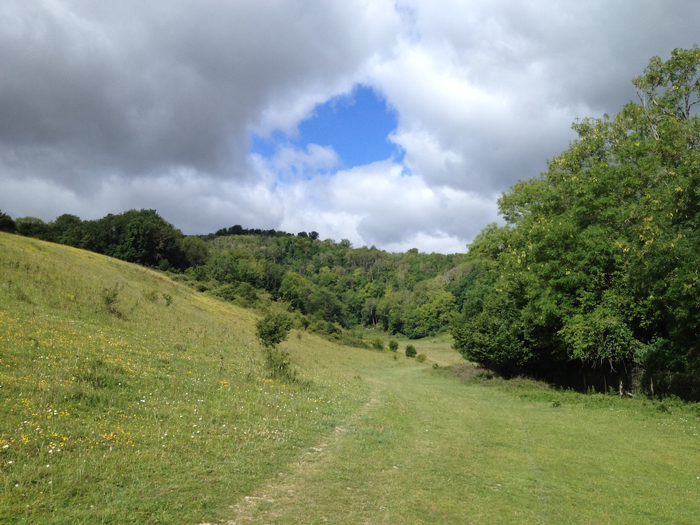
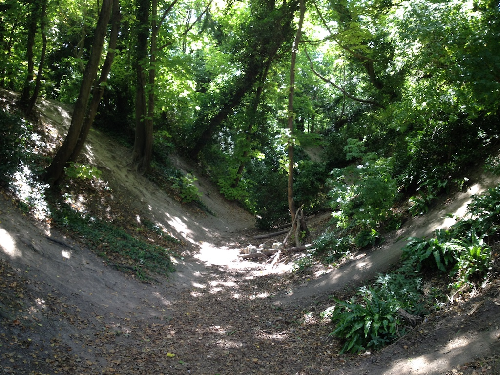

Some Walks During Lockdown
During the Covid-19 'lockdown' we have been trying to get out for a walk most days, provided it isn't raining. I think we started on April 6th 2020. We often do what I call our 'round the block' route or an extended version. This starts by going up the twitten next to our house, including the 102 steps, to the Bostal Road. Then up to Newham Lane and for the extended version up a path to where it meets the Upper Horseshoe path. We then decend, join Newham Lane, take the footpath behind the houses on Laines Road and walk up to Portway. Occassionally I take a photo or two to post on our shared Google Photos site and sometimes some photos that I don't post, but are worth recording.
Monday 13th April (Easter Monday)
A rare 'selfie', taken a little way from the first style on the Bostal Road above Newham Lane. The path went in the wrong direction, so we went back to Newham Lane and up the path. The second photo is where the path meet the Upper Horseshoe path on our 'extended round the block' route.
Tuesday 14th April
Rock art on the lower horseshoe. 'Children' had left all sorts of painted stones/pebbles on the path.
Tuesday 5th May


From the top of the Rifle Range and then on the western path coming down.
Wednesday 6th May
From the top of the Upper Horseshoe path. 140m above sea level, whereas our house is about 30m above sea level.

Thursday 7th May
Yesterday we passed a field full of buttercups, but I didn't take a photo. Today, on our 'extended round the block' walk, we came past these verges.
Sunday 10th May
 This morning we went for the longest walk of the lockdown so far (about 5½ kilometers). We went up the twitten (102 steps), up the Bostal Road, up the Horseshoe path, over Round Hill (180m) to the South Downs Way, down Sopers Lane (past the end of Kingsmead Close) and back along to the Bostal. Then down the twitten. We are sitting down for the rest of the day!
This morning we went for the longest walk of the lockdown so far (about 5½ kilometers). We went up the twitten (102 steps), up the Bostal Road, up the Horseshoe path, over Round Hill (180m) to the South Downs Way, down Sopers Lane (past the end of Kingsmead Close) and back along to the Bostal. Then down the twitten. We are sitting down for the rest of the day!
Tuesday 12th May
Yesterday we had a rest from walking because we did a long walk on Sunday and the weather was cold and very windy. So this morning we decided to do 'not too energetic' walk. However, once we had reached the top of the Rifle Range we decided to carry on up to the Upper Horseshoe path. It was a long climb! Then when we reached the gate to come down we found the normally docile cattle around it , quite agitated and being very vocal. We decided to carry on to the South Downs Way and saws that a van and trailer was in the next field, so the cattle probably thought they were about to get some food.
However, it was a very clear day. From the top we could see the wind farm and the i360 on the promenade in Brighton.
Friday 15th May
We had a couple of days off walking since it has been windy and quite cold. However, today was clear blue sky with a gentle breeze. Angela had something to deliver to the Steyning Centre, so we tooh the 'long route' via the Lower Horseshoe. The path has been closed while ash trees were felled due to ash die-back, so this was the first time that we had been along it for a while. It has been devastated! We can only hope that the bulk of the felled trees will be removed and the path restored.
The day was very clear. In this panorama you can see the South Downs on the right and the North Downs in the distance on the left.
Sunday 17th May
While we were walking around the upper horseshoe we found a path that goes down to the lower horseshoe, with about 50 steps. The panorama was taken just before the we branched off.
Monday 18th May
We intended a gentle walk to the river. We got to the river, but we started and finished with our 102 steps! As you can see from the photo (three stitched together) there was a clear blue sky, but today was 'shirt-sleeves' weather. We went through Clays Field and up the path next to the castle, then back along The Street.
Tuesday 19th May
We can see this field from our bedroom window and saw it turn white last year. We don't know what flowers are growing there. This morning our walk was a simple extended around the block.
Sunday 24th May
After yesterday's dismal weather (first rain for weeks), today was suitable for a walk around the Upper Horseshoe. Just before we reached the Lower Horseshoe path we found a lot of pyramidal orchids.
Monday 25th May
Spring bank holiday, sunshine from start to finish and warmer than yesterday. Our walk was intended to be less strenuous, heading in the direction of the river, although we did start by going up the twitten. We walked around the castle, finding the car park full. By the mobile home park (near St Mary's House) we found a 'nature' board that told us the orchids we found yesterday are, in fact, Common Spotted, not Pyramidal.
Monday 1st June
Since today was my 72nd birthday we went for a slightly more substantial walk, around the Upper Horseshoe. We had done this before, but it is probably the most demanding walk that we do. The first two photos show the path on the way up, then there is the obligatory panorama, taken from a little lower down than usual, and finally there is the view as we emerge from the woods on the way down on the western path.
Tuesday 2nd June
I was expecting a more gentle walk today, after yesterday's exertion. We didn't go up much, but we walked a long way, going west, beyond the Rifle Range and looping back south under the rise of the hills. After an hour and a half we got back to the High Street, bought takeaway coffees in Victoria's Sponge and sat under a tree in the park to drink them. These two photos (stitched together) were taken at the extremity of our walk.
Tuesday 9th June
 We'd not been out for walk for the past couple of days, so we went after breakfast around the Upper Horseshoe. We did the route anti-clockwise, starting by going across the cricket field and then up the edge of the Rifle Range. We came back along the 'snake' path and down the twitten. It was mainly overcast, but warmer than it looked. On our way up we saw lots of common spotted orchids, but also a couple of pyramidal orchids starting to come into bloom.
We'd not been out for walk for the past couple of days, so we went after breakfast around the Upper Horseshoe. We did the route anti-clockwise, starting by going across the cricket field and then up the edge of the Rifle Range. We came back along the 'snake' path and down the twitten. It was mainly overcast, but warmer than it looked. On our way up we saw lots of common spotted orchids, but also a couple of pyramidal orchids starting to come into bloom.
Monday 16th June
 This morning we decided to walk across to the Rifle Range. When we got there we thought we would investigate the gate at the far (westerly) end, hoping it would lead to a path. However, it only led to the contractions used to raise and lower the targets, the path ending in a barbed-wire fence. From a little above the buildings you can see the top of the brickwork and just make out two ridges in the field that we assume were used as firing points.
This morning we decided to walk across to the Rifle Range. When we got there we thought we would investigate the gate at the far (westerly) end, hoping it would lead to a path. However, it only led to the contractions used to raise and lower the targets, the path ending in a barbed-wire fence. From a little above the buildings you can see the top of the brickwork and just make out two ridges in the field that we assume were used as firing points.
Having gone back into the Rifle Range we climbed a steep path to the normal path and then headed down towards Mouse Lane, although we veered off before reaching the lane.
Tuesday 23rd June
It was forecast to be a very warm day, so we set off fairly early (for us), leaving at 9:15. Next door's gardener was trimming the hedge up the twitten, so we set off across the cricket field and the Rifle Range. Then through the mountain bike area and back down, along the 'snake' path. The gardener had finished by the time that we came down the twitten. The first photo was taken part way through the mountain bike area and the second a little further along, where there is a seat and a view out to sea. Overall it took us an hour and a half.
Friday 3rd July
It's a while since I've noted any of our walks, even though we have been out several time each week. Also, Angela has started joining her WI walking group on Wednesday mornings.
This morning we took the long route to the butchers, going via the cricket field and the Rifle Range. We took this path, probably for the first time, around the woodland in the Rifle Range.
We climbed up the slope, from where the view was a little more dramatic than usual. We then went down towards Mouse Lane, turning off through the horse paddocks before reaching the lane. From the butchers we returned via the cricket field.
Monday 6th July
Yesterday we only had a short walk, around the lower horseshoe, so this morning we went aournd the upper horseshoe and returned via the lower horseshoe. Since Marylin and Brian's gardener was working in the twitten we went to the path that runs behind Laines Road, but turned left and walked up to the Bostal. Then, rather than descending from the woods we took the path (with the steps) that joins the upper and lowwer paths. So we went past Juniper Bank. We couldn't decide if this was one of two juniper trees (bushes?) in the foreground of the photo.
Monday 20th July
Although lockdown restrictions are starting to be eased, our routine has not changed a great deal. We could book a table at a restaurant, but the most adventurous we are likely to be is to order a take-away. However, we are still trying to get out for some walks. This and the next few weeks are more difficult since we are having the kitchen refitted and so there are workmen here most days. Today the electricians left at about three o'clock and so we went somewhere we had not been for quite a while; Bramber Castle moat. We went up the twitten, across Clays Field and then around the moat, before coming home up the Bostal and down the twitten. About an hour in all.
Thursday 13th August
We have still been doing the occasional walks, but it has ben more difficult due to having tradesmen here refitting the kitchen. Angela has done more walks, including those with her WI friends. Today, however, the flooring contractor finished early and it wasn't too warm, so we walked across the playing field, across the Rifle Range, up the slope and back down into Steyning. Just over a one hour walk.
Saturday 5th September
The day started with a clear blue sky and only a slight chill in the air. We decided to take the long route to the High Street, via the 'snake' path.
Sunday 13th September
It has been a while since we walked around the Upper Horseshoe. It was a fine afternoon, so the first photo is the view from the eastern edge and the second is from the western edge. Just right of centre you can see eight white triangles. Our house is the one on the left.
Tuesday 15th September
Another glorious 'Indian Summer' day, although this week we are in a slightly tighter lockdown. We can only mix with up to six people (at a suitable distance) both indoors and outside. It doesn't really affect us, but rather than just go to Steyning High Street for a few groceries we decided to walk to Hyde Square in Beeding via the 102 steps, Clays Field, the water meadows, over the river and past St Peter's church. This is the view to Bramber Castle and the Downs from the recreation ground in Beeding. We had hoped to make a morning of it by stopping at the Castle Hotel for a coffee, but, although it was open, we couldn't find anyone to serve us! So we had quite a tiring one and a quarter hours walk.
Saturday 26th September
Our daily walks have regressed into a walk once or twice a week, at least for me. Last Saturdays we took the long route to the High Street via the 'snake' path. This morning, after Angela had walked to the High Street to buy a newspaper and a few other things, we went for a longer walk. Up the snake path, down and across to the lower horseshoe, around it, down the edge of the rifle range and back across the playing field. So that was the morning mainly over.
Tuesday 13th October
Although we had been around the lower horseshoe on Saturday morning, we decided to go for a walk before lunch up the twitten, along the 'snake' path, up and around the upper horseshoe, down to and back around the lower horseshoe and home. We came back that way so that we could pick up a few apples from Newham Lane. This photo is supposed to show how the leaves have started changing colour, but it looked more dramatic when looking from the hillside.
Saturday 21st November
We are halfway through our lockdown (only one month this time) and this is only the second time that we've been for a walk (both around the lower horseshoe), since the weather has not been so good. It was a little muddy in places, thus the diversion.
Tuesday 24th November
Having said that we hadn't been out for many walks recently, we took advantage of a sunny afternoon. Starting by going up the twitten, we went down the Bostal Road, through Clays Field, along the Downs Link to the river bank, back through Bramber, through the 'cow's field', along Maudlin Lane and then up the Bostal Road. We were out for an hour and twenty minutes, which was long enough, since, although there was little in the way of wind and it was mild, the sun was just going down behind the hills as we got home.
© David James 2020 Last updated: 25th November 2020